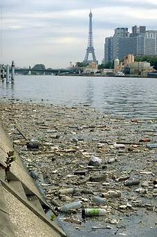

Sources of land pollution:
Below are some sources of solid and semi-solid pollutants:
 Agricultural sources:
Agricultural sources:
These include waste matter produced by crop, animal manure, and farm residues. They also include the chemical left over of all pesticides, fertilisers and insecticides used for agricultural activities.

Ashes:
The residual matter that remains after solid fuels are burned. When waste is burned in incinerators, two types of ashes are produced. Bottom ash is the debris from burnt metal and glass waste. Bottom ash are not bio-degradable. The second type of ash is called fly ash. This is the ash that is trapped by filters in the chimney of the incinerators. It is know to be very toxic (poisonous). Every four trucks of waste burnt produces about one truck of ashes that end up in the landfill too. Ashes easily leak into the soil and water tables causing land and water pollution.
Mining sources:
This includes piles of coal refuse and heaps of slag and underground debris. Mining and forestry activities that clear the land surfaces (clearcutting) and use 'skid trails' often leave leave the land unrestored. The surface is exposed to erosion which destroys the quality of the land. Additionally, iron and other chemicals such as copper, mercury and lead from mining practices leach into the soil, polluting it and leaving it exposed to water bodies as well.
Industrial sources:
These include paints, chemicals, metals and aluminum, plastics and so on that are produces in the process of manufacturing goods.
Sewage Treatment:
Wastes that are left over after sewage has been treated, biomass sludge, and settled solids. Some of these are sent directly to landfills whiles other treatment plants burn them to generate electricity. Both end up polluting the environment.
Garbage or waste:
These include household or municipal waste such as glass, metal, cloth, plastic, wood, paper, and so on. Some of these can decay and others cannot. They are usually collected and sent to landfills where the pollution action begins.
Construction sources:
These include waste like debris, wood, metals and plastics that are produced from construction activities.
Deforestation:
This is when trees are cut down for economic purposes, mining, farming and construction. In forests areas, trees absord and reflect about 20% of the intense heat from the sun, protecting and preserving its surface soils. Cutting down trees mean that the land is exposed to direct sunlight and rain, resulting in soil erosions, desertification and land degradation.
Chemical And Nuclear Plants:
These include chemical waste from chemical industries that are disposed off into landfills.
Oil Refineries:
When crude oil is refined into usable petro, gas or diesel, there are by products that end up as waste.